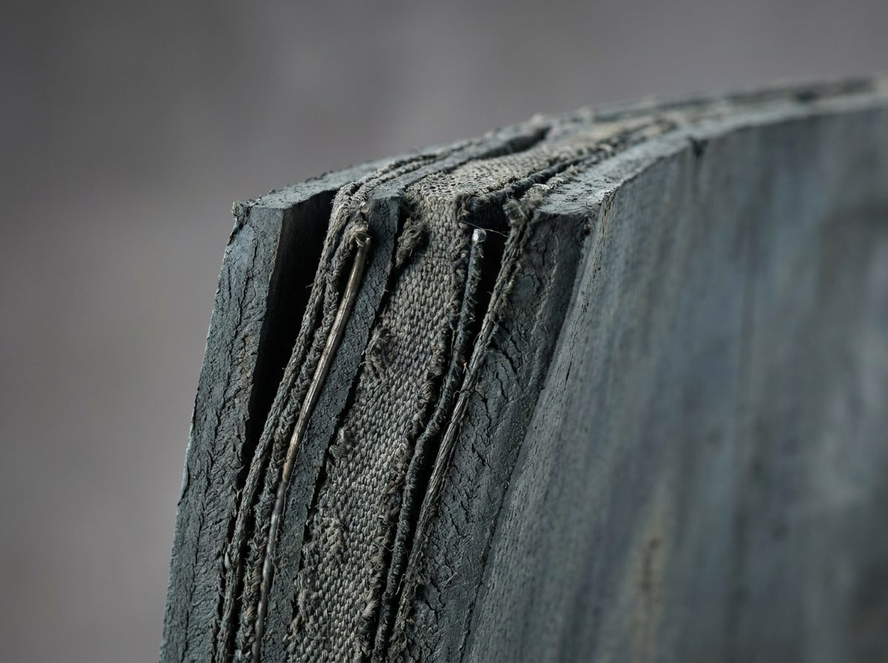

Conveyor & power-transmission belts
Engineered conveyor, processing and power-transmission belts — fabric-ply, food-grade PU/PVC, cleated and profiled — confectioned, spliced and finished to your line. A leading producer of special engineered belts, and regional distributor of CHIORINO.

Belts for every line.
Food & beverage
Food-contact PU/PVC belts for processing and packing lines.
Packaging & logistics
Sorting, accumulation and incline conveying with cleats.
Wood, quarry & minerals
Abrasion-resistant fabric-ply belts for bulk handling.
Power transmission
Flat and toothed drive belts for machinery.
Belt selection guide.
Indicative ranges for standard constructions. Final specification is confirmed per order.
| Belt type | Construction | Max width (mm) | Strength (N/mm) | Temp. range | Surface / cover |
|---|---|---|---|---|---|
| Fabric-ply conveyor (EP) | 2–4 ply PES/PA | up to 2000 | 250–1000 | −30…+120 °C | Rubber, smooth/rough |
| Food-grade PU / PVC | Homogeneous / fabric-backed | up to 1500 | 8–20 / ply | −10…+80 °C | FDA / EU food-contact |
| Cleated / profiled | Fabric + welded cleats | to spec | per base | per base | Cleats, sidewalls |
| Power-transmission (flat) | PA core + friction cover | to spec | high | per base | High-friction / low-noise |
| Toothed / timing | Reinforced | to spec | — | per base | Positioning drives |
| Special / modular | Engineered to drawing | to spec | — | per base | Custom |

Send us a drawing or sample
We confection to your pulley diameters, closure type and cleat layout. Send an existing belt sample, drawing or line spec and we reverse-engineer or improve it.
Start a belt inquiryMore than a belt supplier.
We cut, confection, splice (endless), and finish belts with cleats, sidewalls and V-guides. As regional distributor of CHIORINO for Croatia, Bosnia, Serbia, North Macedonia, Albania and Kosovo, we combine our own production with a premium international range.
Datasheets & guides.
Sent to your business e-mail on request — no password wall.
Common questions.
Our belt engineers reply within one business day.
{{ q.a }}
Belt quote & fabrication.
Send belt dimensions, pulley diameters and line conditions — or an existing sample — and we propose the construction and finishing. Program is preselected.
Thank you for your inquiry.
We've logged your request. Our belt team will reply within one business day with a construction proposal and quote.